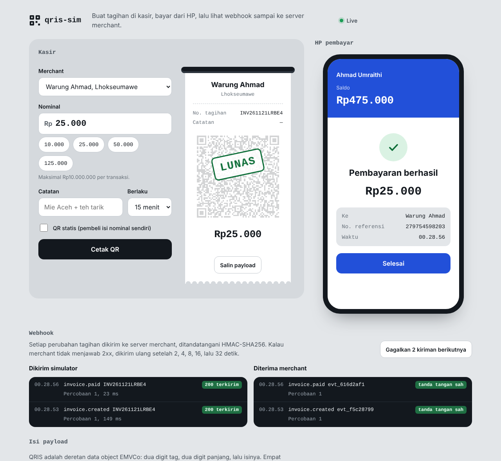

Proyek portofolio · Java 21
Simulator pembayaran QRIS,dari kasir sampai webhook.
Buat tagihan di kasir, bayar dari HP dengan PIN, lalu lihat notifikasi bertanda tangan HMAC sampai ke server merchant. Semua sisi penyelenggara ditulis dengan Java standar, tanpa framework.
Server demo bisa butuh beberapa detik untuk bangun saat pertama dibuka. PIN demo: 123456.

Satu pembayaran, empat langkah
Setiap langkah di bawah bisa kamu jalankan sendiri di demo, dan semuanya terlihat dalam satu layar.
Kasir mencetak QR
Payload EMVCo dengan nominal, nomor tagihan, dan CRC16. Berlaku 1 sampai 15 menit.
HP memindai
Payload dibaca, CRC dicek, merchant dan nominal ditampilkan sebelum bayar.
Bayar dengan PIN
Saldo dipotong sekali saja berkat Idempotency-Key, lalu struk kasir berubah LUNAS saat itu juga.
Merchant diberi tahu
Webhook ditandatangani HMAC-SHA256 dan dikirim ulang kalau merchant tidak menjawab.
Yang dijaga, dan caranya
- QR diubah nominalnya
- CRC di tag 63 dicek, dan nominal QR dinamis dicocokkan lagi dengan tagihan di server.
- Tombol bayar tertekan dua kali
- Header
Idempotency-Keywajib. Permintaan ulang mengembalikan pembayaran yang sama. - Dua orang membayar satu tagihan bersamaan
- Cek dan perubahan saldo berjalan dalam satu kunci. Diuji dengan 16 pembayar yang berebut sekaligus.
- PIN ditebak
- PIN disimpan sebagai hash PBKDF2, dan tiga kali salah mengunci dompet selama 5 menit.
- Saldo dompet orang lain dikuras
- Setiap dompet punya token acak yang hanya diberikan ke pembuatnya. Tanpa token itu, id dompet saja tidak bisa dipakai melihat saldo atau membayar.
- Data pembayar bocor
- Tidak ada daftar semua tagihan, dan siaran langsung hanya membawa id, status, dan nominal. Membatalkan tagihan butuh token milik kasir yang membuatnya.
- Webhook palsu atau diputar ulang
- HMAC atas waktu dan isi pesan, dibandingkan dengan waktu konstan. Salinan yang lebih tua dari 5 menit ditolak.
- Merchant sedang mati
- Dikirim ulang setelah 2, 4, 8, 16, dan 32 detik dengan id event yang sama, jadi duplikat bisa dibuang.
- Demo publik di-spam
- Dompet terpisah untuk setiap pengunjung, memori dibatasi, dan permintaan per IP dibatasi dengan token bucket.
Bisa dipakai lewat API juga
Semua yang ada di layar demo tersedia sebagai REST API berformat JSON. Daftar lengkapnya ada di README.
# buat tagihan Rp32.000
curl -s https://qris-sim-465d7.containers.snapdeploy.app/api/invoices \
-H 'Content-Type: application/json' \
-d '{"merchant_id":"M001","amount":32000,"note":"Mie Aceh"}'
# buat dompet demo, simpan id dan token-nya
curl -s -X POST https://qris-sim-465d7.containers.snapdeploy.app/api/wallets
# bayar dengan payload tagihan dan dompet di atas
curl -s https://qris-sim-465d7.containers.snapdeploy.app/api/payments \
-H 'Content-Type: application/json' -H 'Idempotency-Key: bayar-1' \
-H 'X-Wallet-Token: WALLET_TOKEN' \
-d '{"payload":"PAYLOAD","wallet_id":"WALLET_ID","pin":"123456"}'- Java 21
- com.sun.net.httpserver
- Server-Sent Events
- HMAC-SHA256
- PBKDF2
- JUnit 5
- Docker
- GitHub Actions